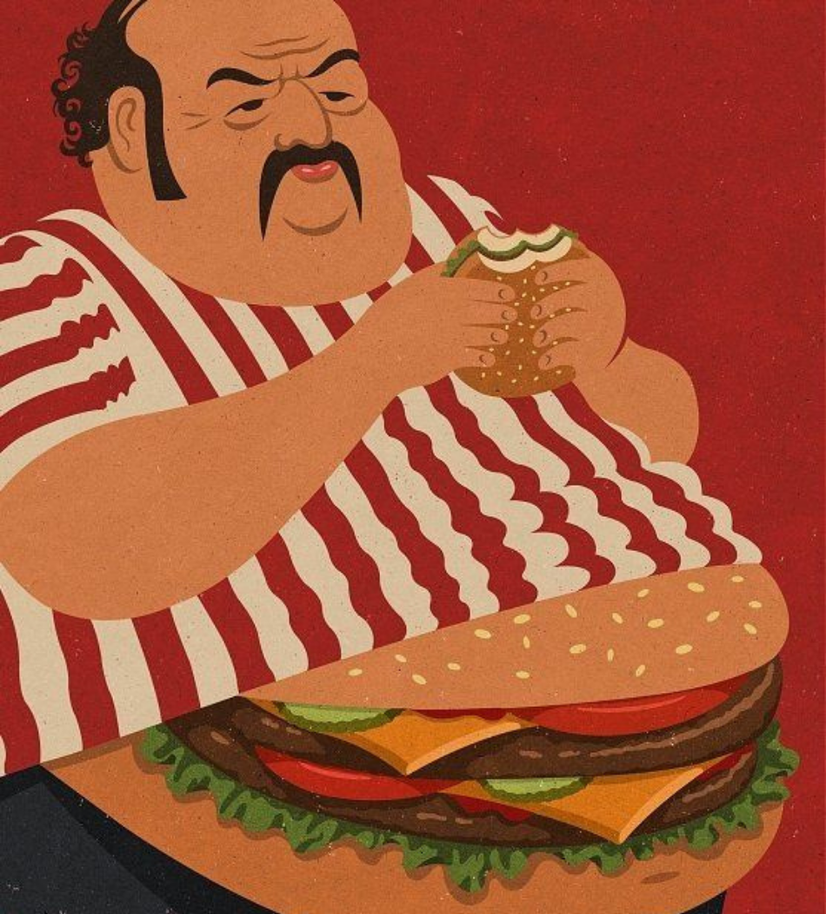

Exploring Australia's Fast Food and Health Trends
Fast Food, Obesity and Physical Activities




This dashboard explores the relationship between fast food habits, obesity patterns, and physical health among Australians. Increasing fast food consumption, driven by convenience and affordability, has become a growing public health concern as it may contribute to obesity and unhealthy lifestyle habits.
Fast food restaurants are highly concentrated around major cities and coastal areas, reflecting population density and urban food access. Popular chains such as McDonald's, KFC, and Hungry Jack's are commonly located near shopping centres, highways, and tourist areas due to high consumer demand.
Fast food consumption patterns in Australia show strong demand for quick and accessible meals. Burgers and sandwiches dominate consumer choices, while meal deals and loyalty programs remain popular among regular customers. These behaviours highlight the growing role of fast food in everyday Australian lifestyles.
Fast food spending and obesity patterns provide insight into how lifestyle, diet, and consumer behaviour may relate to health outcomes in Australia. Victoria and New South Wales, which have a high concentration of fast food restaurants, also show the highest average spending on fast food. Higher fast food consumption may contribute to poorer health outcomes, and compared with the OECD average, Australia records higher obesity and overweight rates among both males and females.

Increasing fast food accessibility and consumption patterns may contribute to rising obesity rates and unhealthy lifestyle habits across Australia. Higher fast food consumption is often associated with diets high in calories, fat, and sugar, which may increase the risk of obesity and related health issues. Obesity statistics used in this dashboard were obtained from the Australian Institute of Health and Welfare (AIHW).
Severe obesity rates among adults have steadily increased from 1995 to 2022, with females recording slightly higher rates than males. Among children and adolescents, overweight rates remain much higher than obesity rates, while both categories generally show an upward trend over time.
The age-group comparison shows that overweight and obesity rates are higher among middle-aged adults, particularly between ages 45-64. Younger adults aged 18-24 record the lowest rates, while older age groups continue to experience relatively high levels of obesity and overweight.
The rising trends may reflect the impact of unhealthy eating habits, frequent fast food consumption, and lifestyle changes on the general health of Australians.